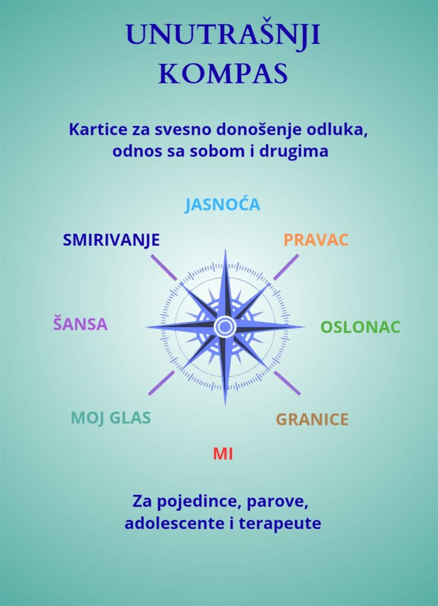

Za koga je
Za sve koji žele da nastave rad na sebi i kada nisu na seansi: klijente u terapiji, ljude koji vode dnevnik, roditelje, parove, kao i kolege koje traže materijal za rad sa svojim klijentima i radionice.
Autorski set kartica
Nastao iz želje da vam pruži podršku i između susreta. Kroz pažljivo osmišljena pitanja i vežbe podstiče samorefleksiju, razvijanje unutrašnjih resursa i pronalaženje sopstvenih odgovora.

Kartice su okupljene oko osam tema koje se u radu najčešće prepliću: jasnoća, pravac, oslonac, granice, mi, moj glas, šansa i smirivanje. Set je namenjen pojedincima, parovima, adolescentima i terapeutima.
Svaka kartica ima dve strane: na licu je tema, a na naličju pitanje uz koje se zadržavate.
Kliknite na karticu da je okrenete i vidite pitanje sa naličja.
Za sve koji žele da nastave rad na sebi i kada nisu na seansi: klijente u terapiji, ljude koji vode dnevnik, roditelje, parove, kao i kolege koje traže materijal za rad sa svojim klijentima i radionice.
Izvučete jednu karticu i odgovorite na pitanje — pismeno ili naglas. Bez tačnog odgovora i bez žurbe. Neke kartice nose vežbu koja traje nekoliko minuta, druge pitanje uz koje se vraćate danima.
Napomena: podaci o broju kartica, formatu, ceni i načinu naručivanja biće dodati ovde.
Set možete naručiti porukom — javite mi se telefonom, na Viber ili WhatsApp na 060/390-9501, ili e-mailom na sgterapeut@gmail.com.